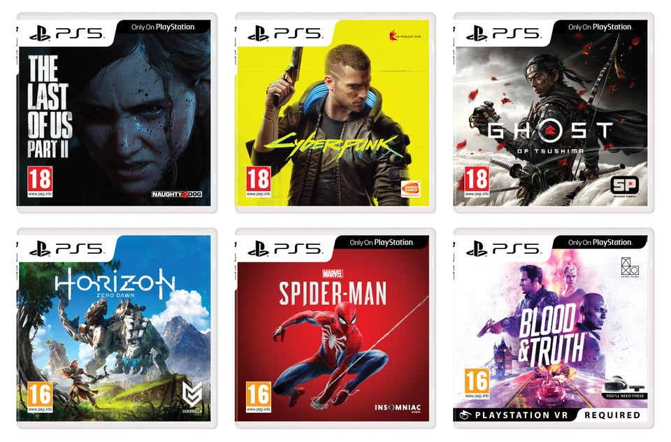
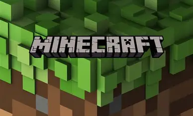
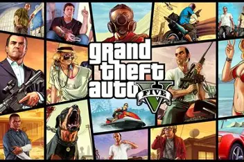
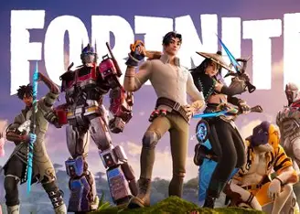
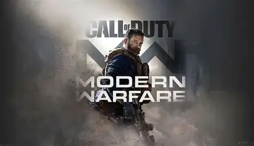

Aquí encontrarás videojuegos y su información para poder descargarlos en sus páginas oficiales, para que puedas jugar con confianza y sin virus.
Los videojuegos son programas informáticos diseñados para el entretenimiento que permiten a una persona interactuar con un entorno virtual mediante dispositivos como consolas, computadoras o teléfonos móviles. Se caracterizan por combinar imágenes, sonidos y reglas que crean una experiencia dinámica en la que el jugador toma decisiones y controla personajes o acciones dentro de un mundo digital. Además de ser una forma de diversión, los videojuegos pueden tener objetivos educativos, narrativos o competitivos, ofreciendo géneros variados como aventura, deportes, estrategia, acción y simulación. En esencia, un videojuego es una manera de jugar en un espacio virtual donde la imaginación y la tecnología se unen para brindar experiencias únicas.


Minecraft es un videojuego de construcción de tipo «mundo abierto» o en inglés sandbox creado originalmente por el sueco Markus Persson (conocido comúnmente como «Notch»), que creó posteriormente Mojang Studios (actualmente parte de Microsoft). Está programado en el lenguaje de programación Java para la versión Java Edition y posteriormente desarrollado en C++ para la versión de Bedrock Edition. Fue lanzado el 17 de mayo de 2009, y después de numerosos cambios, su primera versión estable «1.0» fue publicada el 18 de noviembre de 2011.
Visitar sitio oficial
Grand Theft Auto V (abreviado como GTA V o GTA 5) es un videojuego de acción y aventura de mundo abierto desarrollado por Rockstar North y publicado por Rockstar Games. Fue lanzado inicialmente el 17 de septiembre de 2013 para PlayStation 3 y Xbox 360. Posteriormente, se publicó el 18 de noviembre de 2014 para PlayStation 4 y Xbox One, incorporando, entre otras mejoras, un modo de juego con perspectiva en primera persona. La versión para Microsoft Windows se lanzó el 14 de abril de 2015, mientras que las ediciones para PlayStation 5 y Xbox Series X/S se publicaron el 15 de marzo de 2022, con mejoras técnicas como resolución de hasta 4K, mayor rendimiento, tiempos de carga reducidos y nuevas características gráficas. Es la séptima entrega principal de la serie Grand Theft Auto y la primera desde Grand Theft Auto IV (2008). Su historia transcurre en el estado ficticio de San Andreas, principalmente en la ciudad de Los Santos y sus alrededores, una recreación satírica del sur de California y de la ciudad de Los Ángeles.
Visitar sitio oficial
Fortnite es un videojuego del año 2017 desarrollado por la empresa Epic Games lanzado como diferentes paquetes de software, que presentan seis modos de juego diferentes, pero que comparten el mismo motor de juego y mecánicas. Fue anunciado en los premios Spike Video Game Awards en 2011. Los modos de juego publicados en 2017 incluyen Fortnite: Battle Royale, un juego gratuito donde hasta cien jugadores luchan en una isla con armas y materiales de construcción que se van encontrando a lo largo de la partida. El último en quedar vivo es el ganador, y mientras transcurre la partida el mapa se hace más pequeño debido a la tormenta. También existe un modo cooperativo de pago de hasta cuatro jugadores que consiste en luchar contra criaturas parecidas a zombis, utilizando objetos, mejoras y fortificaciones.
Visitar sitio oficial
Call of Duty: Warzone es un videojuego de disparos en primera persona, perteneciente al género battle royale gratuito, lanzado el 10 de marzo de 2020 para PlayStation 4, PlayStation 5, Xbox One, Xbox Series X|S y Microsoft Windows. El modo de juego estaba disponible en estas plataformas y es parte del videojuego de 2019, Call of Duty: Modern Warfare, pero no requiere su compra y se presentó durante la temporada 2 del contenido de Modern Warfare. Con la integración con Call of Duty: Vanguard pasó a denominarse Call of Duty: Warzone Pacific; para más tarde y después del lanzamiento de Call of Duty: Warzone Caldera pasaría a denominarse Call of Duty: Warzone 2.0. Sus servidores se cerraron el 21 de septiembre de 2023.
Visitar sitio oficialLos videojuegos pueden encontrarse en diferentes géneros, como acción, aventura, deportes, carreras, estrategia y simulación.
Actualmente existen videojuegos para computadoras, consolas, teléfonos celulares y otros dispositivos.